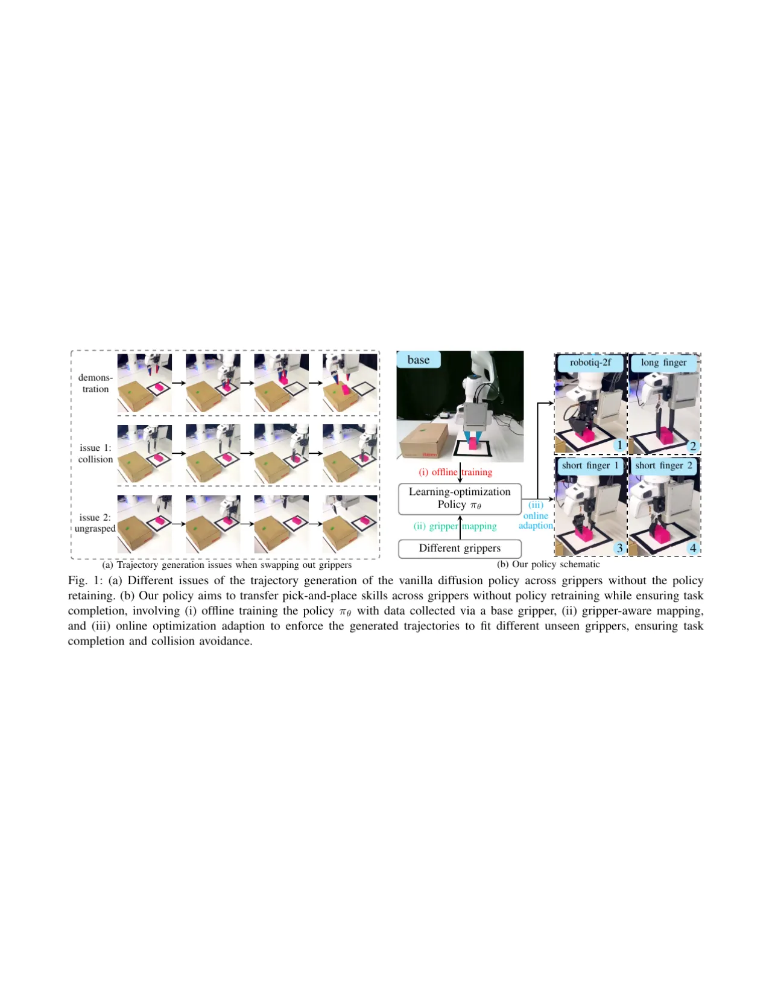
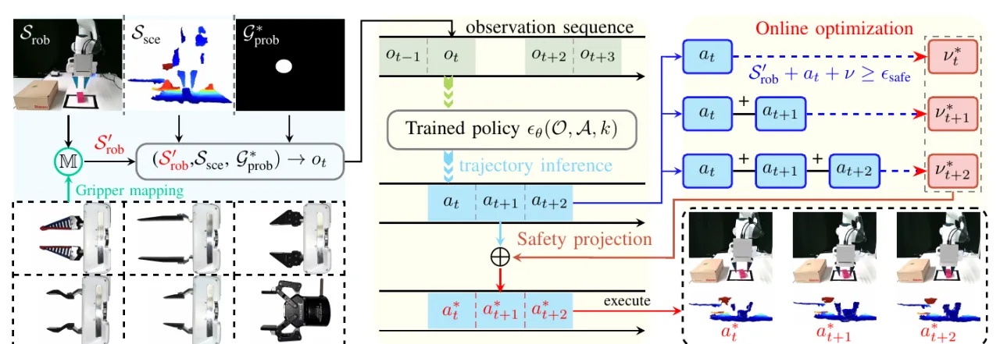
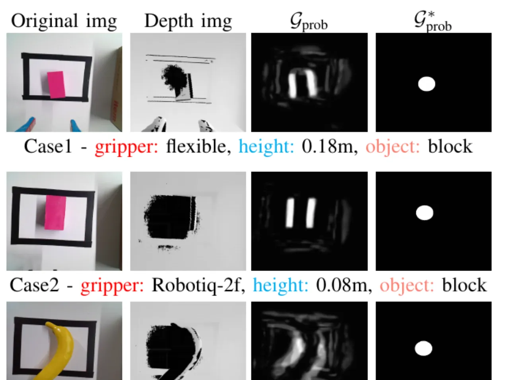
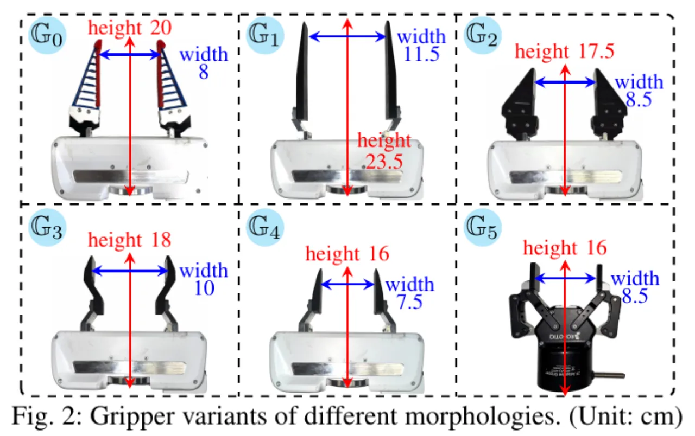
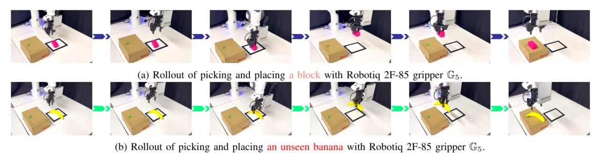

换一个末端夹爪就得重训 diffusion policy？本文把「学习」和「优化」拆开：策略照常用 base gripper 的示范离线训练，而在推理阶段用一次 constrained denoising 把生成轨迹投影到新夹爪的几何与安全约束上。无需为新夹爪采集任何数据或微调，在 Franka Panda 上跨 6 种夹爪零样本泛化，抓放成功率从 baseline 的 23–27% 提升到 93.3%。
当前的机器人抓放策略「typically require consistent gripper configurations across training and inference」——训练和部署必须用同一个夹爪。一旦换成新末端执行器，尤其对 imitation learning / diffusion policy 这类行为克隆方法，往往要付出高昂的重训或微调代价。换夹爪会改变末端的 tool-center-point (TCP) 位置：直接把预训练策略套到新夹爪上，生成的轨迹要么撞桌（更长的夹爪），要么抓空（更短的夹爪）。
「objects cannot be grasped with shorter grippers, and collisions can result from using longer grippers.」——换夹爪造成的轨迹偏移 ‖τG_i − τG_0‖ 超过成功阈值 δtol，任务随之失败。
已有的 multi-embodiment 方案（如 HPT、跨本体 latent 对齐）虽然能泛化，但需要大量 embodiment-specific 数据或策略微调，部署灵活性受限。本文的目标是：不采集新数据、不重训、不微调，仅在推理时引入夹爪配置，就让训练好的策略适配未见夹爪并完成任务。

框架把问题拆成两半：(1) gripper-invariant knowledge learning —— 学习与夹爪几何无关的抓取知识；(2) morphology-aware trajectory optimization —— 推理时按夹爪形态优化轨迹。策略主干沿用 Simple DP3（3D Diffusion Policy），训练与 DDPM 一致；推理用 DDIM，10 步去噪。关键在于把最后几步去噪改造成一个带约束的优化过程。

换夹爪会改变 RGB / 点云的视觉观测，让策略陷入 out-of-distribution。作者引入一个与末端几何无关的 grasping probability map 作为额外观测通道，让策略聚焦物体本身的抓取 affordance 而非夹爪外观。该图用在 Cornell Grasping Dataset（885 张 RGB-D、240 物体）上预训练的 GG-CNN 从深度图生成。为抵抗手眼相机移动带来的尺度变化与光照噪声，再做三步稳定化：threshold filtering（丢弃概率 <0.7 的像素）、centroid 计算、以质心为中心 r=30 px 的 circular masking，得到稳定的 G*prob。

夹爪形态差异主要沿两个维度：竖直轴 z 上的 TCP offset，以及夹爪开合 g 上的 抓取宽度差异。定义两个可微映射把新夹爪 G(i) 的参数投影回训练用的 base gripper G(0)：
z′(i) = z(i) + Δh(i)， g′(i) = α(i) · g(i)；其中 Δh(i) = z(0) − z(i) 为高度偏移，α(i) = gmax(0) / gmax(i) 为宽度缩放。
映射参数 {Δh, α} 通过对夹爪尺寸的离线机械测量标定。变换后的位姿 S′rob = (x, y, z′, g′) 喂给 πθ，保持观测空间跨夹爪一致。当前实现只做平移补偿，旋转补偿留作 future work。
光有映射还不够，视觉差异仍可能诱发不安全轨迹。作者在 DDIM 去噪步骤里插入一个投影层 ProjC：为效率考虑，投影只在最后几步（k ≤ 2）激活。每步求解一个 quadratic program，找最小修正量 ν*，使 TCP 高度满足安全裕度 εsafe = 0.01 m：
min ‖νkt‖² s.t. S′rob(z)t + Φ(akt) + νkt ≥ εsafe；Φ(·) 把 latent action 反归一化到 Cartesian 位移。
为在整个 Ta 步动作序列上维持安全，进一步引入累积约束（temporal consistency）：把 ν 约束作用在前缀和 Σr=0..j Φ(at+r) 上，保证「cumulative trajectory is always safe」（P = 1）。投影后动作 a* = Φ⁻[Φ(a) + ν*] 即为可执行的安全轨迹。整个过程不改动网络权重，因此对新夹爪是零样本的。
平台为 Franka Emika Panda，末端可换：native 平行夹爪 + 定制 3D-printed / flexible fingertips，以及 Robotiq 2F-85。感知用 egocentric Azure Kinect DK + 固定 Intel RealSense D455，ROS noetic 同步。训练数据仅 59 条专家示范，且只用 base gripper G0 + 一个 pink block；backbone 为改造后的 Simple DP3 MM（把 G*prob 经 ResNet-18 编码后拼接），训练 8,000 epochs。评测覆盖 6 种不同形态夹爪（TCP 高度 16–23.5 cm、开口宽度 7.5–11.5 cm），每种夹爪重复 5 次。
Baseline 为 Diffusion Policy (DP) 与 Diffusion Policy 3D (DP 3D)；消融含 Ours w/o Projection 与 Ours w/o G*prob。μ 为跨 6 夹爪平均。
| Method | G₀ | G₁ | G₂ | G₃ | G₄ | G₅ | μ |
|---|---|---|---|---|---|---|---|
| Seen object：Block | |||||||
| Diffusion Policy | 20.0 | 0.0 | 60.0 | 40.0 | 0 | 40.0 | 26.7 |
| Diffusion Policy 3D | 20.0 | 0.0 | 60.0 | 60.0 | 0.0 | 0.0 | 23.3 |
| Ours w/o Projection | 100.0 | 0.0 | 60.0 | 40.0 | 0.0 | 0.0 | 33.3 |
| Ours w/o G*prob | 80.0 | 20.0 | 40.0 | 80.0 | 100.0 | 0.0 | 53.3 |
| Ours | 100.0 | 80.0 | 100.0 | 80.0 | 100.0 | 100.0 | 93.3 |
| Unseen object：Banana | |||||||
| Diffusion Policy | 20.0 | 0.0 | 40.0 | 60.0 | 40.0 | 20.0 | 30.0 |
| Diffusion Policy 3D | 20.0 | 0.0 | 40.0 | 40.0 | 20.0 | 0.0 | 20.0 |
| Ours w/o Projection | 80.0 | 0.0 | 40.0 | 40.0 | 0.0 | 20.0 | 30.0 |
| Ours w/o G*prob | 60.0 | 0.0 | 40.0 | 60.0 | 40.0 | 0.0 | 33.3 |
| Ours | 80.0 | 60.0 | 100.0 | 60.0 | 60.0 | 60.0 | 70.0 |
另有一个有意思的即插即用结果：把本文的 safety projection 直接接到 baseline 推理端，DP + Projection 在 G₀ 上从 20.0% 升到 100.0%、DP 3D + Projection 升到 80.0%，说明约束投影模块可迁移。当物体位置被随机化时，DP 与 DP 3D「collapse entirely（success rate is 0）」，凸显它们对位置先验的依赖。


消融显示 Projection 与 G*prob 各司其职：去掉 Projection 时，策略在偏离 G₀ 较大的夹爪（G₁、G₄、G₅）上失败；去掉 G*prob 时，在 Kinect 视角下外观差异大的夹爪（G₁、G₅）成功率跌到 0–20%。安全分析（Fig. 6）进一步表明：对更长的 G₁（TCP +3.5 cm），DP / DP 3D / Ours-w/o-Projection 都撞桌，只有完整策略无碰撞完成；对更短的 G₄（TCP −4 cm），缺少 gripper mapping 会让抓取点悬在物体上方过高，而完整策略能正确下探。作者用 KL 散度（Table I）量化 G*prob 在不同条件下的分布稳定性，明显优于原始 Gprob。
脚注明确：「This paper forces on two-finger grippers problems in SE(3) space. SE(6)-space and three-finger grippers implementation is future work.」三指夹爪与 SE(6) 空间尚未支持。
「Current implementation focuses on translational pose adaptation, and the rotational compensation remains future work.」gripper mapping 目前只处理 TCP 高度偏移与开口宽度缩放，不处理姿态旋转差异。
映射参数 {Δh(i), α(i)}「obtained through offline calibration with mechanical measurement of gripper dimensions」——每个新夹爪仍需人工测量尺寸做标定，而非完全自动获取。
G*prob 来自在 Cornell Grasping Dataset 上预训练的 GG-CNN（parallel-jaw grasp 标注）；对超出该先验分布的物体/抓取模式，抓取概率图的质量可能成为瓶颈。unseen 物体（banana）成功率 70% 亦低于 seen 物体的 93.3%。
训练仅 59 条示范、单一 base 夹爪 + 单一 block；每个夹爪评测 5 次（共 30 次/方法）。真实场景的物体多样性与统计置信度仍有待更大规模验证。